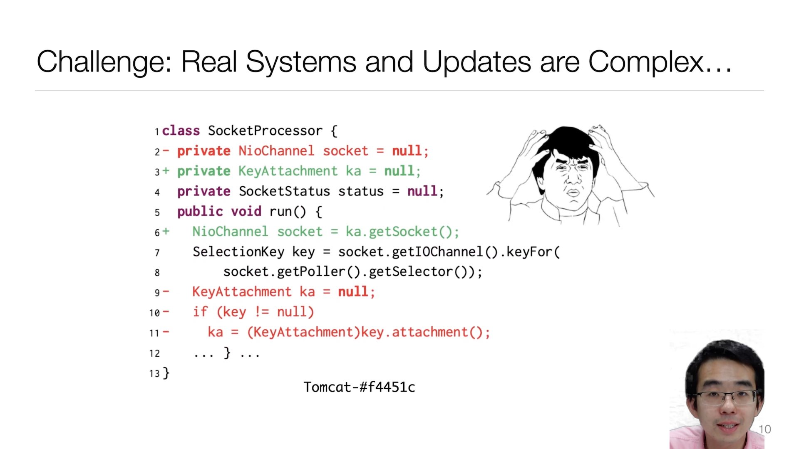

[A3] Paper Presentation
⚠️Submission DeadlineCST 23:59:59 Dec 6, 2023.
The deadline is firm. Submit via this URL.
You may have already collected a few relevant papers in your research area.
For this task, you are required to select the single most impactful paper that resonated with you and deliver an online presentation about it.
To emulate the experience of a virtual conference, you are to create a video recording in which you comprehensively present the insights and findings of this paper.
Creating a presentation video of a research paper is a great way to communicate complex information in an engaging and accessible way.
The following recommendations have been thoughtfully provided by GPT-4-turbo to enhance your presentation:
- Understand the Paper: Before you start creating your presentation, make sure you have a deep understanding of the paper's content, its methodology, results, and implications. This will allow you to explain the concepts clearly and answer any potential questions from your audience.
- Define Your Audience: Tailor your presentation to your audience's level of expertise. If your audience is not familiar with the subject, avoid using too much jargon or overly technical terms without explanation.
- Create a Storyline: Organize your presentation in a logical flow that tells a story. Start with the background and the problem the paper addresses, then move on to the methodology, findings, and conclusions.
- Make a Script: Write a script for your presentation. This will help you stay on topic and ensure you cover all the important points. Practice your script to make your delivery smooth and natural.
- Design Your Slides: Create slides that complement your talk. Use bullet points, images, graphs, and diagrams to illustrate your points. Avoid cluttering slides with too much text or data.
- Engage with Visuals: Use visuals effectively to explain complex ideas. Charts, graphs, and illustrations can help your audience understand the research better.
- Keep it Concise: Time your presentation to fit within the assigned duration. It's better to be slightly under time than to rush through your slides or, worse, to be cut off.
- Practice Your Delivery: Rehearse your presentation multiple times. This will help you become more comfortable with the material and improve your pacing, intonation, and engagement with the camera.
- Record in a Quiet Environment: Choose a quiet place to record your video to avoid background noise. Ensure good lighting and that you are clearly visible in the frame.
- Check Your Tech: Test your microphone, camera, and any other equipment before recording. Make sure the audio and video quality are good.
- Edit Your Video: After recording, edit your video to remove any mistakes, long pauses, or unnecessary parts. Add captions or on-screen text to emphasize key points.
- Include a Q&A Section: If possible, anticipate questions that viewers might have and address them at the end of your presentation.
- Seek Feedback: Before submitting your video, get feedback from peers or mentors. They can provide valuable insights on how to improve your presentation.
- Cite Properly: Make sure to give proper credit to the original paper and any other sources you use in your presentation.
- Be Enthusiastic: Show your interest in the topic. Enthusiasm can be contagious and can help keep your audience engaged.
Remember, the goal of your presentation is not only to inform but also to inspire your audience to learn more about the topic. Good luck with your assignment!
Comments from the adviors:
Watch Patrick Winston's How to Speak once again before preparing your presentation,
and GPT overlooked the crucial aspect: we can always learning from others. You can discover a wealth of presentation videos from various conferences, such as those from USENIX. Open courses also serve as an excellent resource for learning. Seek out both good and bad presentations and take lessons from each of them.
Presentation Specifications
- The presentation must be in English.
- The resolution must be 1920 x 1080.
- The length must not exceed 15 minutes.
- Record a full-screen presentation (no PowerPoint toolbars, etc.).
- Your portrait must appear in the video.
Below is an example (from our ICSE'21 presentation):

We recommend screen capturing using the operating system or streaming software (e.g., OBS)'s built-in recording feature.
Online meeting software (e.g., Tencent Meeting) uses a low-profile CRF to achieve minimal file size and significantly sacrifices image quality.
We recommend a high-quality screen capture and using the following command to finalize your video:
ffmpeg -y -i 输入文件名 \
-vf scale=1920:1080 \
-c:v libx264 -crf 28 \
-c:a aac -b:a 128k \
输出文件名.mp4
This gives reasonable encoding time (<10 minutes on a laptop), file size, and image quality.
Live Broadcast Week
Course instructors will stream all presentations live for one week on http://live.bilibili.com/21816941. We encourage students to view all presentations to learn from your peers.
The instructors will also give feedback on the presentation videos on class meeting.